Progreso
Progreso
 Créditos
Créditos
¿Qué es la lógica?
¿Qué es la lógica? La lógica es una rama de la filosofía, matemáticas e informática que estudia los principios y métodos que se utilizan para distinguir el razonamiento correcto del incorrecto. Es una herramienta que nos permite inferir conclusiones válidas a partir de premisas dadas.
En un sentido más amplio, la lógica examina la estructura y consistencia de las declaraciones y argumentos, independientemente del contenido específico de esas declaraciones. A través de sus reglas y estructuras, proporciona un marco para evaluar la validez de los argumentos y deducir nuevas proposiciones a partir de las ya conocidas.
Hay varios sistemas y subcampos dentro de la lógica, incluyendo la lógica proposicional y la cuantificacional.
Lógica proposicional (o lógica de enunciados)
Estudia las proposiciones que son declaraciones que pueden ser verdaderas o falsas, pero no ambas simultáneamente. En esta lógica, las proposiciones se combinan mediante operadores lógicos como "y" (conjunción), "o" (disyunción), "no" (negación), entre otros.
Lógica cuantificacional (o lógica de predicados)
Va un paso más allá de la lógica proposicional al considerar proposiciones que tienen variables y cuantificadores como "para todo" (∀) y "existe" (∃). Estas proposiciones hacen afirmaciones sobre objetos en un dominio específico.
La lógica es fundamental no solo en la filosofía y las matemáticas, sino también en campos como la informática, la inteligencia artificial y la lingüística, entre otros. Su estudio y comprensión permiten una argumentación y razonamiento más claros y estructurados.
¿Qué es la lógica?
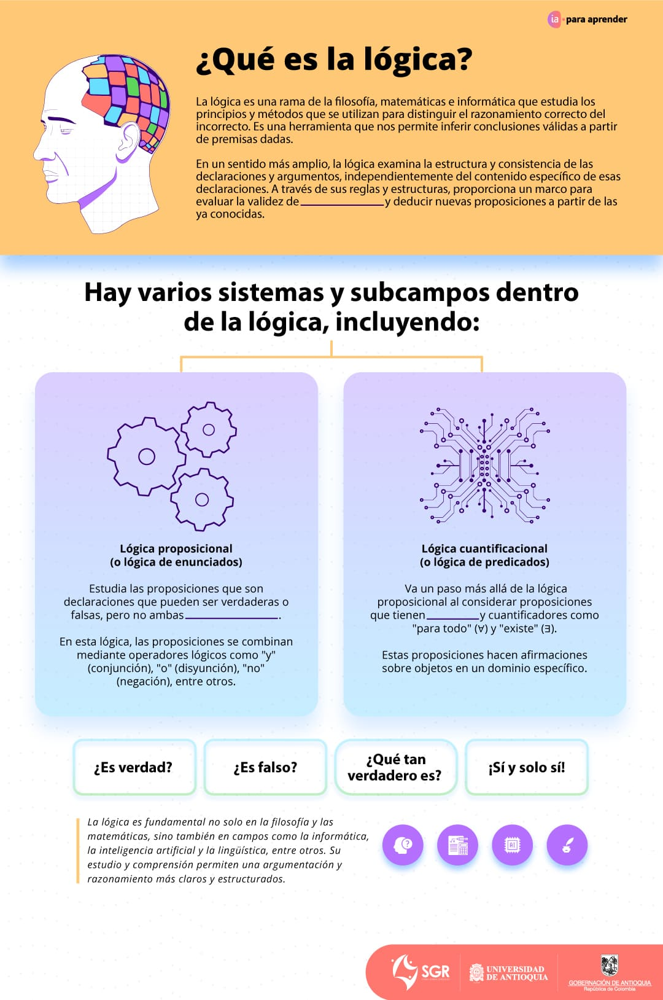
Lógica proposicional
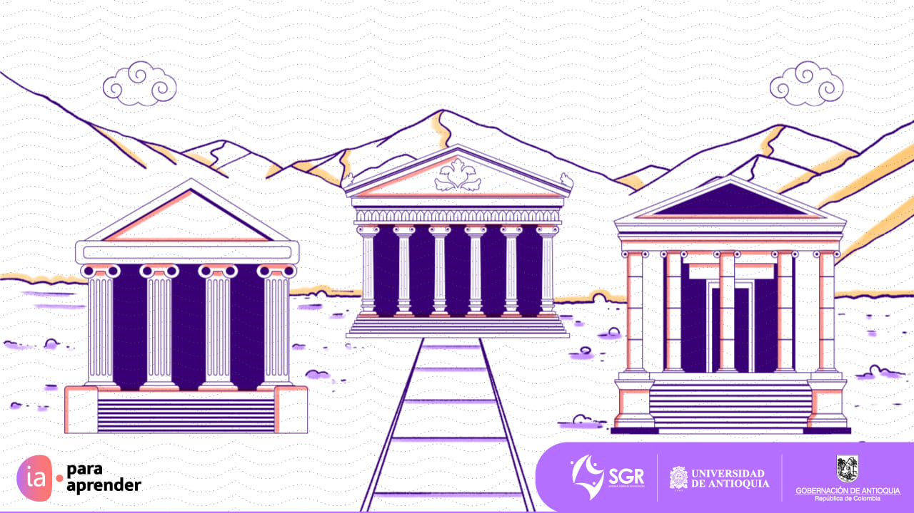
Introducción y proposiciones simples
La lógica proposicional es la rama de la lógica que estudia las proposiciones y sus conectivas lógicas. Una proposición es una afirmación que puede ser verdadera o falsa, como por ejemplo "llueve" o "dos más dos es igual a cuatro". Las conectivas lógicas son operaciones que permiten combinar o modificar proposiciones.
Entre los Componentes básicos de la lógica proposicional encontramos las Proposiciones simples (atómicas): estas son declaraciones básicas que no se descomponen en declaraciones más simples.
Ejemplo: "llueve" o "el sol brilla".
Operadores lógicos y tablas de verdad
Los operadores lógicos o conectivas son herramientas fundamentales en la lógica proposicional que permiten formar proposiciones compuestas a partir de proposiciones más simples.
Por otra parte, las tablas de verdad son herramientas útiles para analizar y evaluar la veracidad de las proposiciones y sus conectivas lógicas. Estas tablas muestran todas las posibles combinaciones de valores de verdad de las proposiciones involucradas y el resultado correspondiente de la operación lógica.
A continuación, te presento los principales operadores lógicos junto con su definición, un ejemplo y su tabla de verdad:
Estos operadores lógicos y tablas de verdad permiten combinar proposiciones de diferentes maneras para formar proposiciones compuestas y analizar la relación entre ellas.
Ejemplo:
A partir de las siguientes proposiciones, construiremos las tablas de verdad
para las proposiciones compuestas:
• P. Si llueve
• Q. Llevaré un paraguas
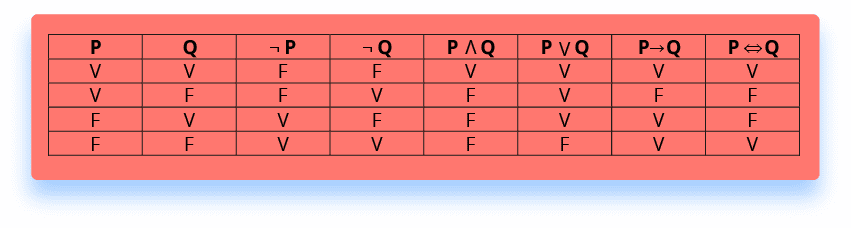
Negación de los operadores lógicos compuestos
La lógica proposicional utiliza varios operadores para conectar y modificar proposiciones. Estos operadores incluyen: conjunción (y), disyunción (o), implicación (→) y bicondicional (↔), entre otros. La negación, representada por el símbolo ¬, es fundamental porque nos permite expresar la falsedad de una proposición dada.
Para comprender cómo funciona la negación con operadores compuestos, veamos cada uno:
Lógica proposicional
A continuación, encontrarás un audio y un texto escrito. Te proponemos escuchar el audio mientras lees, así podrás identificar los ejemplos y las expresiones matemáticas. Siéntete libre de pausar el audio cuando quieras detenerte en algún detalle de la lectura.
La lógica proposicional es la rama de la lógica que estudia las proposiciones y sus conectivas lógicas. Una proposición es una afirmación que puede ser verdadera o falsa, como por ejemplo "llueve" o "dos más dos es igual a cuatro". Las conectivas lógicas son operaciones que permiten combinar o modificar proposiciones.
1.1 Componentes básicos de la lógica proposicional
1.1.1 Proposiciones simples (atómicas): estas son declaraciones básicas que no se descomponen en declaraciones más simples.
Ejemplo: "llueve" o "el sol brilla".
1.1.2 Operadores lógicos (o conectivas) y tablas de verdad: los operadores lógicos o conectivas son herramientas fundamentales en la lógica proposicional que permiten formar proposiciones compuestas a partir de proposiciones más simples.
Por otra parte, las tablas de verdad son herramientas útiles para analizar y evaluar la veracidad de las proposiciones y sus conectivas lógicas. Estas tablas muestran todas las posibles combinaciones de valores de verdad de las proposiciones involucradas y el resultado correspondiente de la operación lógica.
A continuación, te presento los principales operadores lógicos junto con su definición, un ejemplo y su tabla de verdad:
• Negación (¬):
Cambia el valor de verdad de una proposición.
Ejemplo: si P es “Hoy es lunes” y suponemos que hoy es martes (por lo tanto, P es falso), entonces ¬P sería “Hoy no es lunes”, que es verdadero.
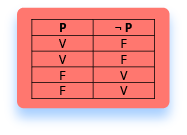
• Conjunción (Λ):
Representa el "y" lógico. Es verdadero solo si ambas proposiciones son verdaderas.
Ejemplo: si P es “Hoy es lunes” y Q es “Está lloviendo”, entonces PΛQ sería “Hoy es lunes y está lloviendo”. Para que esta proposición compuesta sea verdadera, ambas P y Q deben ser verdaderas.
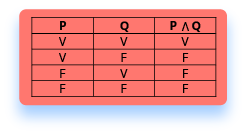
• Disyunción (v):
Representa el "o" lógico. Es verdadero si al menos una de las proposiciones es verdadera.
Ejemplo: si P es “Hoy es lunes” y Q es “Hoy es martes”, entonces PvQ sería “Hoy es lunes o martes”. Esta proposición compuesta es verdadera si al menos una de P o Q es verdadera.
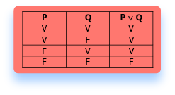
• Implicación (→):
Representa una relación condicional entre dos proposiciones. “P→Q” se interpreta como “si P, entonces Q”. Es falsa solo cuando P es verdadero y Q es falso.
Ejemplo: si P es “Si llueve“ y Q es “La calle estará mojada”, entonces P→Q sería “Si llueve, entonces la calle estará mojada”. Esta proposición es falsa solo si llueve (P es verdadero) y la calle no está mojada (Q es falso).
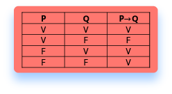
• Bicondicional (⇔):
Indica una relación de doble implicación. Es verdadero si ambas proposiciones tienen el mismo valor de verdad.
Ejemplo: si P es “El semáforo está en verde” y Q es “Puedo cruzar la calle”, entonces P⇔Q sería “El semáforo está en verde si y solo si puedo cruzar la calle”. Para que esta proposición compuesta sea verdadera, ambas proposiciones P y Q deben ser ambas verdaderas o ambas falsas.
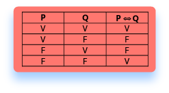
Estos operadores lógicos y tablas de verdad permiten combinar proposiciones de diferentes maneras para formar proposiciones compuestas y analizar la relación entre ellas.
Ejemplo:
A partir de las siguientes proposiciones, construiremos las tablas de verdad para
las proposiciones compuestas:
• P. Si llueve
• Q. Llevaré un paraguas
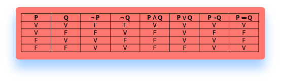
1.2 Negación en los operadores lógicos compuestos: : la lógica proposicional utiliza varios operadores para conectar y modificar proposiciones. Estos operadores incluyen: conjunción (y), disyunción (o), implicación (→) y bicondicional (⇔), entre otros. La negación, representada por el símbolo ¬, es fundamental porque nos permite expresar la falsedad de una proposición dada.
Para comprender cómo funciona la negación con operadores compuestos, veamos cada uno:
1. Conjunción (P v Q)
• Ejemplo: P = Hoy es lunes y Q= Está lloviendo.
• P v Q sería: hoy es lunes y está lloviendo.
• Negación: ¬ (P v Q) es equivalente a ¬PΛ¬Q, lo que equivaldría a:
hoy no es lunes o no está lloviendo.
2. Disyunción (P v Q)
• Ejemplo: P= Me gusta el chocolate y Q= Me gusta el helado.
• P v Q sería: me gusta el chocolate o me gusta el helado.
• Negación: ¬(P v Q) es equivalente ¬PΛ¬Q, lo que equivaldría a:
no me gusta el chocolate y no me gusta el helado.
3. Implicación (P→Q)
• Ejemplo: P= Si estudio y Q= Aprobaré el examen.
• P→Q sería: si estudio, entonces aprobaré el examen.
• Negación: ¬(P→Q) es equivalente a PΛ¬Q, lo que equivaldría a:
estudio y no apruebo el examen.
4. Bicondicional (P⇔Q)
• Ejemplo: P= El interruptor está encendido y Q= La luz está
encendida.
• P⇔Q sería: el interruptor está encendido si y solo si la luz está
encendida.
• Negación: ¬ (P⇔Q) es equivalente a P v Q pero no PΛQ,
es decir, cuando P y Q
tienen valores de verdad diferentes. Lo que equivaldría a:
el interruptor está encendido y la luz no lo está, o el interruptor no está
encendido y la luz sí lo está.
Lógica proposicional
Introducción y proposiciones simples
La lógica proposicional es la rama de la lógica que estudia las proposiciones y sus conectivas lógicas. Una proposición es una afirmación que puede ser verdadera o falsa, como por ejemplo "llueve" o "dos más dos es igual a cuatro". Las conectivas lógicas son operaciones que permiten combinar o modificar proposiciones.
Entre los Componentes básicos de la lógica proposicional encontramos las Proposiciones simples (atómicas): estas son declaraciones básicas que no se descomponen en declaraciones más simples.
Ejemplo: "llueve" o "el sol brilla".
Operadores lógicos y tablas de verdad
Los operadores lógicos o conectivas son herramientas fundamentales en la lógica proposicional que permiten formar proposiciones compuestas a partir de proposiciones más simples.
Por otra parte, las tablas de verdad son herramientas útiles para analizar y evaluar la veracidad de las proposiciones y sus conectivas lógicas. Estas tablas muestran todas las posibles combinaciones de valores de verdad de las proposiciones involucradas y el resultado correspondiente de la operación lógica.
A continuación, te presento los principales operadores lógicos junto con su definición, un ejemplo y su tabla de verdad:
Estos operadores lógicos y tablas de verdad permiten combinar proposiciones de diferentes maneras para formar proposiciones compuestas y analizar la relación entre ellas.
Ejemplo:
A partir de las siguientes proposiciones, construiremos las tablas de verdad
para las proposiciones compuestas:
• P. Si llueve
• Q. Llevaré un paraguas
Negación de los operadores lógicos compuestos
La lógica proposicional utiliza varios operadores para conectar y modificar proposiciones. Estos operadores incluyen: conjunción (y), disyunción (o), implicación (→) y bicondicional (↔), entre otros. La negación, representada por el símbolo ¬, es fundamental porque nos permite expresar la falsedad de una proposición dada.
Para comprender cómo funciona la negación con operadores compuestos, veamos cada uno:
Negación (¬)
Cambia el valor de verdad de una proposición.
Ejemplo: si P es “Hoy es lunes” y suponemos que hoy es martes (por lo tanto, P es falso), entonces ¬P sería “Hoy no es lunes”, que es verdadero.
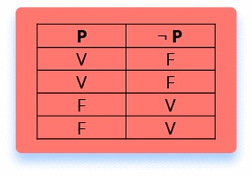
Conjunción (∧)
Representa el "y" lógico. Es verdadero solo si ambas proposiciones son verdaderas.
Ejemplo: si P es “Hoy es lunes” y Q es “Está lloviendo”, entonces P∧Q sería “Hoy es lunes y está lloviendo”. Para que esta proposición compuesta sea verdadera, ambas P y Q deben ser verdaderas.
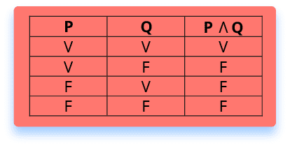
Disyunción (v)
Representa el "o" lógico. Es verdadero si al menos una de las proposiciones es verdadera.
Ejemplo: si P es “Hoy es lunes” y Q es “Hoy es martes”, entonces P∨Q sería “Hoy es lunes o martes”. Esta proposición compuesta es verdadera si al menos una de P o Q es verdadera.
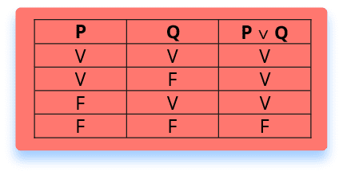
Implicación (→)
Representa una relación condicional entre dos proposiciones. “P→Q” se interpreta como “si P, entonces Q”. Es falsa solo cuando P es verdadero y Q es falso
Ejemplo: si P es “Si llueve” y Q es “La calle estará mojada”, entonces P→Q sería “Si llueve, entonces la calle estará mojada”. Esta proposición es falsa solo si llueve (P es verdadero) y la calle no está mojada (Q es falso).
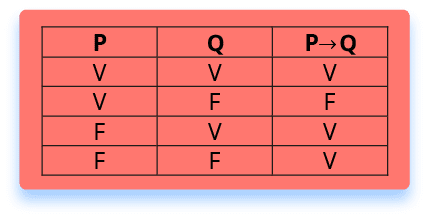
Bicondicional (⇔)
Indica una relación de doble implicación. Es verdadero si ambas proposiciones tienen el mismo valor de verdad.
Ejemplo: si P es “El semáforo está en verde” y Q es “Puedo cruzar la calle”, entonces P⇔Q sería “El semáforo está en verde si y solo si puedo cruzar la calle”. Para que esta proposición compuesta sea verdadera, ambas proposiciones P y Q deben ser ambas verdaderas o ambas falsas.
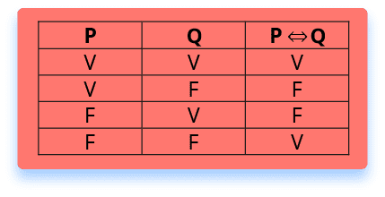
Conjunción (P∧Q)
• Ejemplo: P = Hoy es lunes y Q= Está lloviendo.
• P∧Q sería: hoy es lunes y está lloviendo.
• Negación: ¬(P∧Q) es equivalente a ¬P∨¬Q, lo que equivaldría a: hoy no es lunes o no está lloviendo.
Disyunción (P∨Q)
• Ejemplo: P= Me gusta el chocolate y Q= Me gusta el helado.
• P∨Q sería: me gusta el chocolate o me gusta el helado.
• Negación: ¬(P∨Q) es equivalente ¬P∧¬Q, lo que equivaldría a: no me gusta el chocolate y no me gusta el helado.
Implicación (P→Q)
• Ejemplo: P= Si estudio y Q= Aprobaré el examen.
• P→Q sería: si estudio, entonces aprobaré el examen.
• Negación: ¬(P→Q) es equivalente a P∧¬Q, lo que equivaldría a: estudio y no apruebo el examen.
Bicondicional (P⇔Q)
• Ejemplo: P= El interruptor está encendido y Q= La luz está encendida.
• P⇔Q sería: el interruptor está encendido si y solo si la luz está encendida.
• Negación ¬ (P⇔Q) es equivalente a P∨Q pero no P∧Q, es decir, cuando P y Q tienen valores de verdad diferentes. Lo que equivaldría a: el interruptor está encendido y la luz no lo está, o el interruptor no está encendido y la luz sí lo está.
Lógica cuantificacional
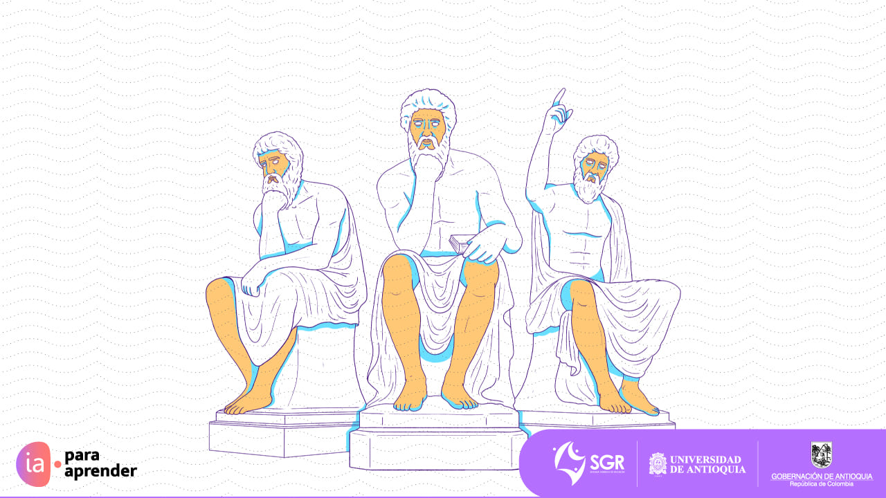
Introducción
La lógica cuantificacional, también conocida como lógica de predicados o lógica de primer orden, extiende la lógica proposicional al permitirnos hacer afirmaciones sobre objetos individuales dentro de un dominio determinado y las relaciones entre ellos. Mientras que la lógica proposicional trata con proposiciones que son verdaderas o falsas en su totalidad, la lógica cuantificacional se ocupa de las propiedades y relaciones de objetos específicos.
Cuantificadores principales
La lógica cuantificacional introduce dos cuantificadores principales:
Negación en la lógica cuantificacional
Ahora, en cuanto a la negación en la lógica cuantificacional:
Negación del cuantificador universal ∀:
La negación de una declaración universalmente cuantificada se traduce en una declaración existencialmente cuantificada.
Ejemplo:
Considera la declaración ∀x, P(x) (Para todo x, P(x) es
verdadero).
La negación de esto sería ¬∀x, P(x), lo que equivale a ∃x,
¬P(x) (Existe
algún x para el
cual P(x) no es verdadero).
Negación del cuantificador existencial ∃:
La negación de una declaración existencialmente cuantificada se traduce en una declaración universalmente cuantificada.
Ejemplo:
Considera la declaración ∃x, P(x) (Existe algún x para el cual
P(x) es verdadero).
La negación de esto sería ¬∃x, P(x), lo que equivale a ∀x,
¬P(x) (Para todo x, P(x) no
es
verdadero).
Lógica cuantificacional
A continuación, encontrarás un audio y un texto escrito. Te proponemos escuchar el audio mientras lees, así podrás identificar los ejemplos y las expresiones matemáticas. Siéntete libre de pausar el audio cuando quieras detenerte en algún detalle de la lectura.
La lógica cuantificacional, también conocida como lógica de predicados o lógica de primer orden, extiende la lógica proposicional al permitirnos hacer afirmaciones sobre objetos individuales dentro de un dominio determinado y las relaciones entre ellos. Mientras que la lógica proposicional trata con proposiciones que son verdaderas o falsas en su totalidad, la lógica cuantificacional se ocupa de las propiedades y relaciones de objetos específicos.
La lógica cuantificacional introduce dos cuantificadores principales:
Cuantificador Universal (∀): se lee como “para todo” o “para cualquier”. Si P (x) es un predicado, entonces ∀x P (x) se interpreta como “Para todo x, P (x) es verdadero”. Por ejemplo, si nuestro dominio son todos los números enteros y P (x) “x es par”, entonces ∀x P (x) se interpretaría como “Todos los números enteros son pares”, lo cual es falso.
Ejemplo en matemáticas:
• Predicado: P (x) que significa “x es par”.
• Declaración: “todos los números múltiplos de 2 son
pares”.
• Representación lógica: ∀x (x es un múltiplo de 2→ P
(x)).
Ejemplo en biología:
• Predicado: B(x) que significa “x tiene un
esqueleto”.
• Declaración: “todos los mamíferos tienen esqueleto”.
• Representación lógica: ∀x (x es un mamífero → B
(x)).
Cuantificador Existencial (∃): se lee como “existe” o “hay al menos uno”. Si P (x) es un predicado, entonces ∃xP(x) se interpreta como “Existe un x tal que P(x) es verdadero”. Siguiendo el ejemplo anterior, ∃xP (x) se interpretaría como “Existe al menos un número entero que es par”, lo cual es verdadero.
Ejemplo en geografía:
• Predicado: C (x)que significa “x es una ciudad”.
• Declaración: “existe una ciudad llamada ‘Paris’”.
• Representación lógica: ∃x (x se llama 'Paris'∧
C(x)).
Ejemplo en literatura:
• Predicado:L (x) que significa “x es una novela
de J.K.
Rowlling”.
• Declaración: “existe una novela escrita por J.K.
Rowlling que se llama ‘Harry Potter y la piedra filosofal’”.
• Representación lógica: ∃x (x se llama 'Harry Potter
y
la piedra filosofal'∧ L(x)).
La lógica cuantificacional es esencial en matemáticas, ciencias de la computación y filosofía, ya que permite expresar afirmaciones más complejas y generalizadas sobre estructuras y entidades en un dominio dado.
Para añadir un poco más de complejidad, a menudo se combinan cuantificadores y se usan en conjunción con la lógica proposicional. Por ejemplo, una afirmación como "Para todo x, existe un y tal que x es menor que y" se puede representar como ∀x∃y (x < y).
Ahora, en cuanto a la negación en la lógica cuantificacional:
Negación del cuantificador universal ∀:
La negación de una declaración universalmente cuantificada se traduce en una declaración existencialmente cuantificada.
Ejemplo:
Considera la declaración ∀x, P(x) (Para todo x, P(x) es verdadero). La negación de esto sería ¬∀x, P(x), lo que equivale a ∃x, ¬P(x) (Existe algún x para el cual P(x) no es verdadero).
Negación del cuantificador existencial ∃:
La negación de una declaración existencialmente cuantificada se traduce en una declaración universalmente cuantificada.
Ejemplo:
Considera la declaración ∃x, P(x) (Existe algún x para el cual P(x) es verdadero). La negación de esto sería ¬∃x, P(x), lo que equivale a ∀x, ¬P(x) (Para todo x, P(x) no es verdadero).
Lógica cuantificacional
Aplicaciones de la lógica proposicional y cuantificacional
La lógica proposicional y cuantificacional, aunque puede parecer abstracta y puramente teórica, tiene numerosas aplicaciones en nuestra vida cotidiana y en diversas disciplinas. Algunas de estas aplicaciones incluyen:
En resumen, la lógica, tanto proposicional como cuantificacional, está profundamente arraigada en muchas áreas de nuestra vida y es una herramienta fundamental para el razonamiento y la toma de decisiones en múltiples disciplinas.
Toma de decisiones: Usamos la lógica de manera constante para tomar decisiones basadas en ciertas condiciones. Por ejemplo, "Si llueve, llevaré un paraguas. De lo contrario, llevaré una gorra."
Programación: La programación de computadoras se basa en gran medida en la lógica proposicional y cuantificacional. Las declaraciones condicionales, bucles y estructuras de control utilizan principios lógicos para determinar qué acciones debe llevar a cabo el programa.
Electrónica: Los circuitos digitales, incluidos los que están en dispositivos cotidianos como computadoras y teléfonos, operan utilizando lógica booleana, que es esencialmente lógica proposicional.
Matemáticas: La lógica es la base de las demostraciones matemáticas. Tanto la lógica proposicional como la cuantificacional se utilizan para establecer la validez de teoremas y lemas.
Derecho: En la argumentación legal, se emplea la lógica para establecer la validez o invalidez de un argumento. Por ejemplo, si se cumple cierta condición (una ley o estatuto), entonces se sigue una consecuencia legal específica.
Filosofía: La lógica es fundamental para la argumentación filosófica. Ayuda a los filósofos a estructurar sus argumentos de manera coherente y a evaluar la validez de los argumentos de otros.
Lingüística: La semántica de los lenguajes naturales a menudo se estudia utilizando herramientas de lógica proposicional y cuantificacional, ayudando a entender cómo construimos significado en el lenguaje.
Bases de datos: Las consultas en bases de datos, como las hechas en SQL, utilizan lógica para filtrar y recuperar información específica. Por ejemplo, al buscar todos los registros que cumplan con ciertas condiciones, estamos aplicando lógica cuantificacional.
Inteligencia Artificial: La lógica es esencial en sistemas expertos, razonamiento automático y otras áreas de la IA, donde las máquinas necesitan razonar sobre información, hacer inferencias y tomar decisiones basadas en conocimientos previos.
Aplicaciones de la lógica proposicional y cuantificacional
Aplicaciones de la lógica proposicional y cuantificacional
Da vuelta a cada una de las tarjetas, escucha el audio y reconoce las aplicaciones del tema que estás estudiando.
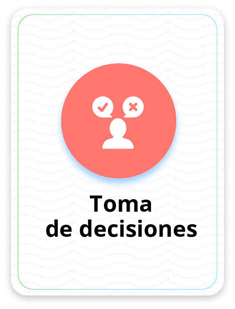
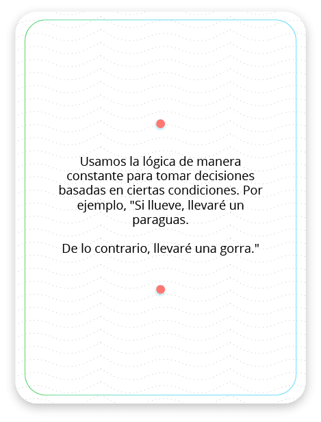
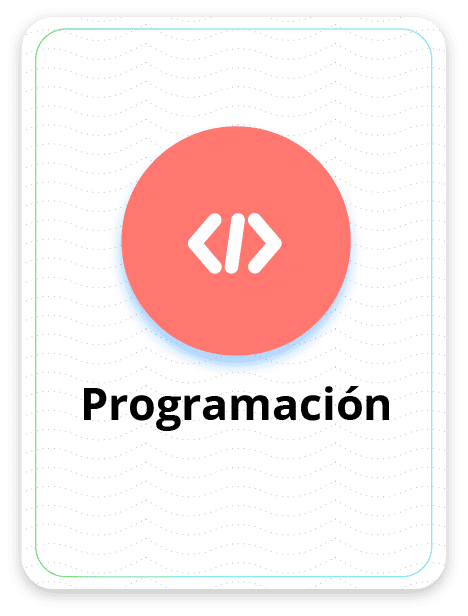
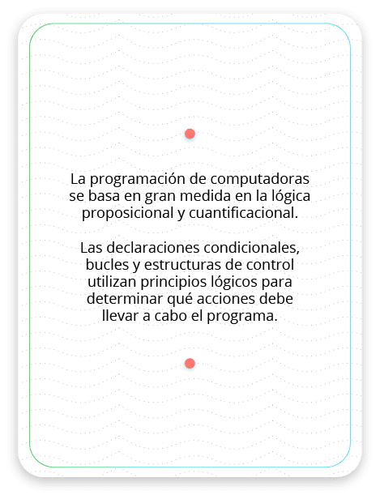
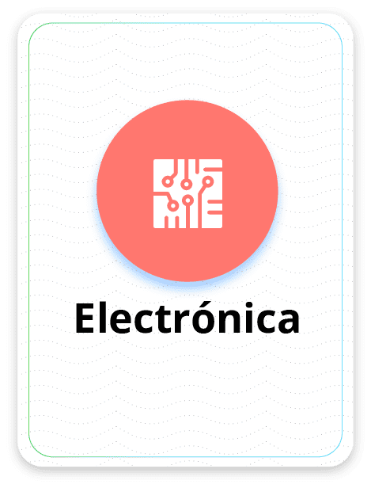
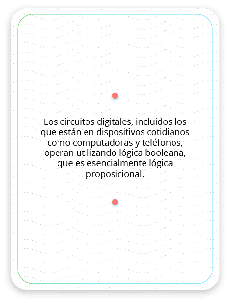
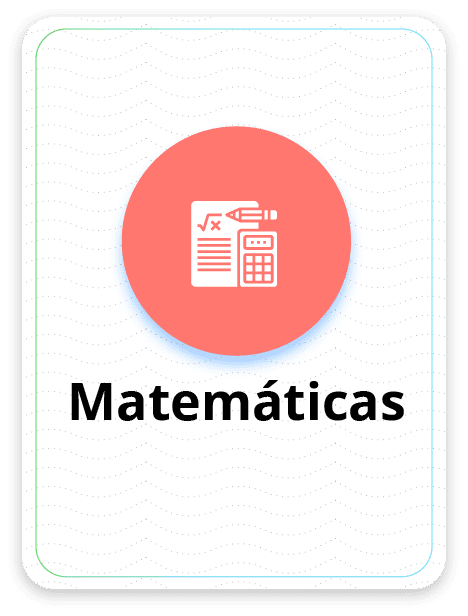
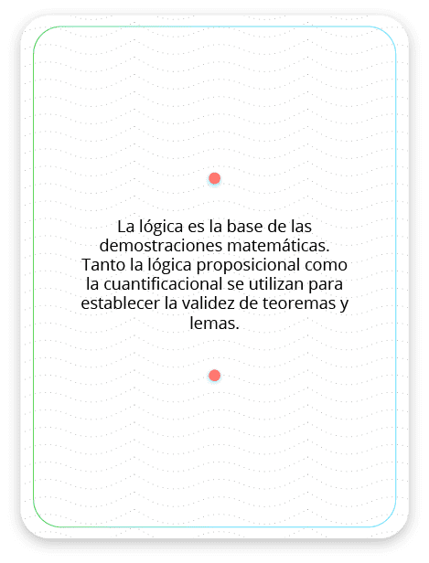
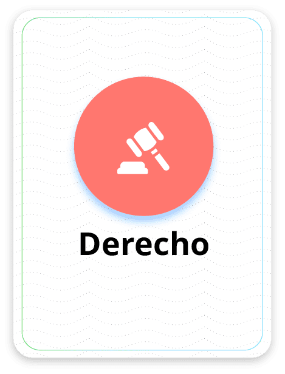
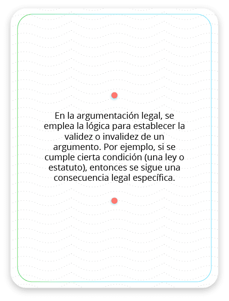
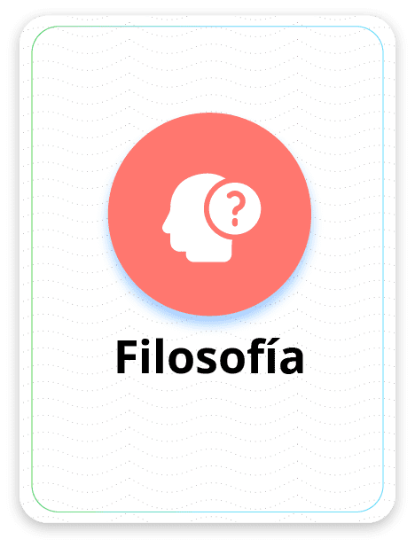
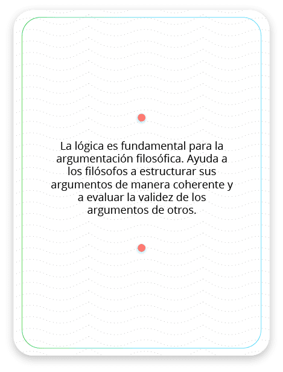
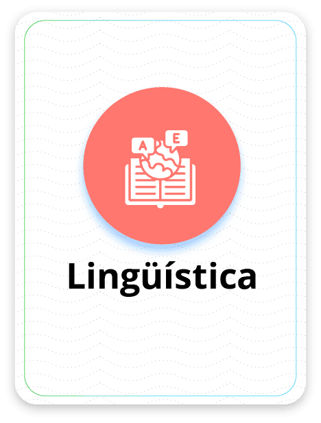
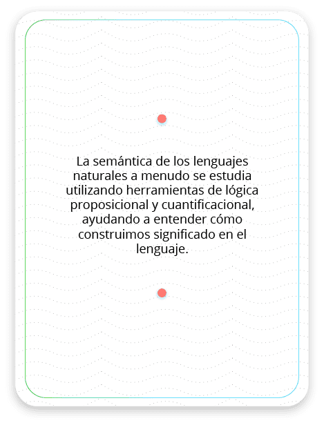
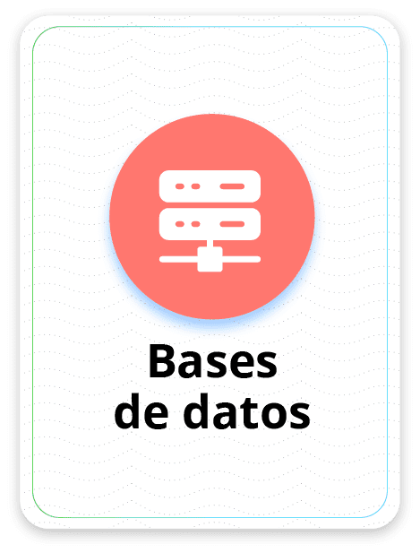
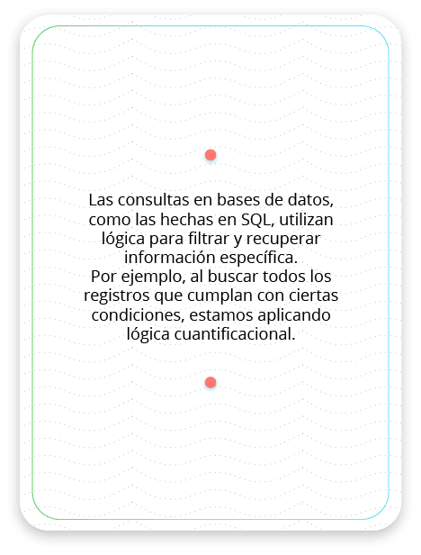
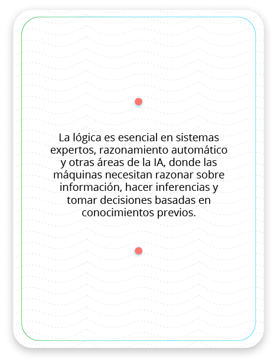
Veamos algunos ejemplos
Ejemplo 1
Durante el fin de semana, Juan y Ana tenían tareas específicas que debían realizar. Juan tenía que ir al mercado y Ana tenía que estudiar para su próximo examen.
Enunciado: si consideramos la afirmación P como "Juan fue al mercado" y la afirmación Q como "Ana estudió para el examen", ¿en qué situaciones ambos cumplirían con sus tareas, representado por la proposición compuesta P∧Q?
Solución: vamos a construir la tabla de verdad para estas proposiciones:
| P | Q | P∧Q |
|---|---|---|
| V | V | V |
| V | F | F |
| F | V | F |
| F | F | F |
Explicación:
1. En la primera fila, tanto P como Q son verdaderas, por lo que P∧Q también es verdadero.
2. En la segunda fila, P es verdadero, pero Q es falso, por lo que P∧Q es falso.
3. En la tercera fila, P es falso, pero Q es verdadero, por lo que P∧Q es falso.
4. En la cuarta fila, tanto P como Q son falsas, por lo que P∧Q también es falso.
Respuesta: ambos, Juan y Ana, cumplirían con sus tareas solo en la situación donde Juan efectivamente fue al mercado (es decir, P es verdadero) y Ana efectivamente estudió para el examen (es decir, Q es verdadero). Esto se refleja en la primera fila de nuestra tabla de verdad, donde P es verdadero, Q es verdadero, y, por ende, P∧Q también resulta ser verdadero.
Ejemplo 2
Una tautología es una fórmula o expresión lógica que es verdadera en todas las posibles asignaciones de valores de verdad para sus variables. En otras palabras, independientemente de si las proposiciones individuales que la componen son verdaderas o falsas, una tautología siempre resultará en verdadero.
Teniendo en cuenta esta definición, demuestra que la siguiente expresión lógica es una tautología: P ∨ (P → Q).
Solución: vamos a demostrar que P∨(P→Q) es una tautología usando una tabla de verdad. Para hacerlo, primero es importante recordar que la implicación P→Q es equivalente a ¬P∨Q. Dicho de otra forma:
• P→Q es FALSO solamente cuando P es VERDADERO y Q es FALSO.
Con esta información en mente, construyamos la tabla de verdad:
| P | ¬P | Q | P→Q | ¬P∨Q | P∨(P→Q) |
|---|---|---|---|---|---|
| V | F | V | V | V | V |
| V | F | F | F | F | V |
| F | V | V | V | V | V |
| F | V | F | V | V | V |
De la tabla, podemos observar lo siguiente:
1. La primera fila: P es verdadero y Q es verdadero, por lo que P→Q también es verdadero. Entonces, P∨(P→Q) resulta verdadero.
2. La segunda fila: P es verdadero, pero Q es falso, lo que hace que P→Q sea falso. Sin embargo, P∨(P→Q) todavía es verdadero porque P es verdadero.
3. La tercera fila: P es falso, pero Q es verdadero, haciendo que P→Q sea verdadero. Entonces, P∨(P→Q) resulta verdadero.
4. La cuarta fila: tanto P como Q son falsos, pero P→Q es verdadero (porque la única forma en que la implicación es falsa es si P es verdadero y Q es falso). Por ende, P∨(P→Q) es verdadero.
Dado que, en todas las posibles combinaciones de valores de verdad para P y Q, P∨(P→Q) siempre resulta ser verdadero, podemos concluir que P∨(P→Q) es una tautología.
Ejemplo 1
Durante el fin de semana, Juan y Ana tenían tareas específicas que debían realizar. Juan tenía que ir al mercado y Ana tenía que estudiar para su próximo examen.
Enunciado: si consideramos la afirmación P como "Juan fue al mercado" y la afirmación Q como "Ana estudió para el examen", ¿en qué situaciones ambos cumplirían con sus tareas, representado por la proposición compuesta P∧Q?
Solución: vamos a construir la tabla de verdad para estas proposiciones:
| P | Q | P∧Q |
|---|---|---|
| V | V | V |
| V | F | F |
| F | V | F |
| F | F | F |
Explicación:
1. En la primera fila, tanto P como Q son verdaderas, por lo que P∧Q también es verdadero.
2. En la segunda fila, P es verdadero, pero Q es falso, por lo que P∧Q es falso.
3. En la tercera fila, P es falso, pero Q es verdadero, por lo que P∧Q es falso.
4. En la cuarta fila, tanto P como Q son falsas, por lo que P∧Q también es falso.
Respuesta: ambos, Juan y Ana, cumplirían con sus tareas solo en la situación donde Juan efectivamente fue al mercado (es decir, P es verdadero) y Ana efectivamente estudió para el examen (es decir, Q es verdadero). Esto se refleja en la primera fila de nuestra tabla de verdad, donde P es verdadero, Q es verdadero, y, por ende, P∧Q también resulta ser verdadero.
Ejemplo 2
Una tautología es una fórmula o expresión lógica que es verdadera en todas las posibles asignaciones de valores de verdad para sus variables. En otras palabras, independientemente de si las proposiciones individuales que la componen son verdaderas o falsas, una tautología siempre resultará en verdadero.
Teniendo en cuenta esta definición, demuestra que la siguiente expresión lógica es una tautología: P ∨ (P → Q).
Solución: vamos a demostrar que P∨(P→Q) es una tautología usando una tabla de verdad. Para hacerlo, primero es importante recordar que la implicación P→Q es equivalente a ¬P∨Q. Dicho de otra forma:
• P→Q es FALSO solamente cuando P es VERDADERO y Q es FALSO.
Con esta información en mente, construyamos la tabla de verdad:
| P | ¬P | Q | P→Q | ¬P∨Q | P∨(P→Q) |
|---|---|---|---|---|---|
| V | F | V | V | V | V |
| V | F | F | F | F | V |
| F | V | V | V | V | V |
| F | V | F | V | V | V |
De la tabla, podemos observar lo siguiente:
1. La primera fila: P es verdadero y Q es verdadero, por lo que P→Q también es verdadero. Entonces, P∨(P→Q) resulta verdadero.
2. La segunda fila: P es verdadero, pero Q es falso, lo que hace que P→Q sea falso. Sin embargo, P∨(P→Q) todavía es verdadero porque P es verdadero.
3. La tercera fila: P es falso, pero Q es verdadero, haciendo que P→Q sea verdadero. Entonces, P∨(P→Q) resulta verdadero.
4. La cuarta fila: tanto P como Q son falsos, pero P→Q es verdadero (porque la única forma en que la implicación es falsa es si P es verdadero y Q es falso). Por ende, P∨(P→Q) es verdadero.
Dado que, en todas las posibles combinaciones de valores de verdad para P y Q, P∨(P→Q) siempre resulta ser verdadero, podemos concluir que P∨(P→Q) es una tautología.
1. Durante el fin de semana, Juan y Ana tenían tareas específicas que debían realizar. Juan tenía que ir al mercado, y Ana tenía que estudiar para su próximo examen.
Enunciado: si consideramos la afirmación P como "Juan fue al mercado" y la afirmación Q como "Ana estudió para el examen", ¿en qué situaciones ambos cumplirían con sus tareas, representado por la proposición compuesta P∧Q?
Solución: vamos a construir la tabla de verdad para estas proposiciones:
| P | Q | P∧Q |
|---|---|---|
| V | V | V |
| V | F | F |
| F | V | F |
| F | F | F |
Explicación:
1. En la primera fila, tanto P como Q son verdaderas, por lo que P∧Q también es verdadero.
2. En la segunda fila, P es verdadero, pero Q es falso, por lo que P∧Q es falso.
3. En la tercera fila, P es falso, pero Q es verdadero, por lo que P∧Q es falso.
4. En la cuarta fila, tanto P como Q son falsas, por lo que P∧Q también es falso.
Respuesta: ambos, Juan y Ana, cumplirían con sus tareas solo en la situación donde Juan efectivamente fue al mercado (es decir, P es verdadero) y Ana efectivamente estudió para el examen (es decir, Q es verdadero). Esto se refleja en la primera fila de nuestra tabla de verdad, donde P es verdadero, Q es verdadero, y, por ende, P∧Q también resulta ser verdadero.
2. Una tautología es una fórmula o expresión lógica que es verdadera en todas las posibles asignaciones de valores de verdad para sus variables. En otras palabras, independientemente de si las proposiciones individuales que la componen son verdaderas o falsas, una tautología siempre resultará en verdadero.
Teniendo en cuenta esta definición, demuestra que la siguiente expresión lógica es una tautología: P ∨ (P → Q).
Solución:
Vamos a demostrar que P∨(P→Q) es una tautología usando una tabla de verdad. Para hacerlo, primero es importante recordar que la implicación P→Q es equivalente a ¬P∨Q. Dicho de otra forma:
• P→Q es FALSO solamente cuando P es VERDADERO y Q es FALSO.
Con esta información en mente, construyamos la tabla de verdad:
| P | ¬P | Q | P→Q | ¬P∨Q | P∨(P→Q) |
|---|---|---|---|---|---|
| V | F | V | V | V | V |
| V | F | F | F | F | V |
| F | V | V | V | V | V |
| F | V | F | V | V | V |
De la tabla, podemos observar lo siguiente:
1. La primera fila: P es verdadero y Q es verdadero, por lo que P→Q también es
verdadero. Entonces, P∨(P→Q) resulta verdadero.
2. La segunda fila: P es verdadero, pero Q es falso, lo que hace que P→Q sea falso. Sin embargo, P∨(P→Q) todavía es verdadero porque P es verdadero.
3. La tercera fila: P es falso, pero Q es verdadero, haciendo que P→Q sea verdadero. Entonces, P∨(P→Q) resulta verdadero.
4. La cuarta fila: tanto P como Q son falsos, pero P→Q es verdadero (porque la única forma en que la implicación es falsa es si P es verdadero y Q es falso). Por ende, P∨(P→Q) es verdadero.
Dado que, en todas las posibles combinaciones de valores de verdad para P y Q, P∨(P→ Q) siempre resulta ser verdadero, podemos concluir que P∨(P→Q) es una tautología.
Completa los espacios en blanco con las soluciones a los ejercicios que se encuentran a continuación:
|
Durante el fin de semana, Juan y Ana tenían tareas específicas que
debían realizar. Juan tenía que ir al mercado, y Ana tenía que estudiar
para su próximo examen.
|
||
|---|---|---|
|
Una tautología es una fórmula o expresión lógica que es verdadera en
todas las posibles asignaciones de valores de verdad para sus variables.
En otras palabras, independientemente de si las proposiciones
individuales que la componen son verdaderas o falsas, una tautología
siempre resultará en verdadero.
|
Opciones
Solución 1
Vamos a construir la tabla de verdad para estas proposiciones:
| P | Q | P∧Q |
|---|---|---|
| V | V | V |
| V | F | F |
| F | V | F |
| F | F | F |
Explicación:
1. En la primera fila, tanto P como Q son verdaderas, por lo que P∧Q también es verdadero.
2. En la segunda fila, P es verdadero, pero Q es falso, por lo que P∧Q es falso.
3. En la tercera fila, P es falso, pero Q es verdadero, por lo que P∧Q es falso.
4. En la cuarta fila, tanto P como Q son falsas, por lo que P∧Q también es falso.
Respuesta: ambos, Juan y Ana, cumplirían con sus tareas solo en la situación donde Juan efectivamente fue al mercado (es decir, P es verdadero) y Ana efectivamente estudió para el examen (es decir, Q es verdadero). Esto se refleja en la primera fila de nuestra tabla de verdad, donde P es verdadero, Q es verdadero, y, por ende, P∧Q también resulta ser verdadero.
Solución 2
Vamos a demostrar que P∨(P→Q) es una tautología usando una tabla de verdad. Para hacerlo, primero es importante recordar que la implicación P→Q es equivalente a ¬P∨Q. Dicho de otra forma:
- P→Q es FALSO solamente cuando P es VERDADERO y Q es FALSO.
Con esta información en mente, construyamos la tabla de verdad:
| P | ¬P | Q | P→Q | ¬P∨Q | P∨(P→Q) |
|---|---|---|---|---|---|
| V | F | V | V | V | V |
| V | F | F | F | F | V |
| F | V | V | V | V | V |
| F | V | F | V | V | V |
De la tabla, podemos observar lo siguiente:
1. La primera fila: P es verdadero y Q es verdadero, por lo que P→Q también
es
verdadero. Entonces, P∨(P→Q) resulta verdadero.
2. La segunda fila: P es verdadero, pero Q es falso, lo que hace que P→Q sea falso. Sin embargo, P∨(P→Q) todavía es verdadero porque P es verdadero.
3. La tercera fila: P es falso, pero Q es verdadero, haciendo que P→Q sea verdadero. Entonces, P∨(P→Q) resulta verdadero.
4. La cuarta fila: tanto P como Q son falsos, pero P→Q es verdadero (porque la única forma en que la implicación es falsa es si P es verdadero y Q es falso). Por ende, P∨(P→Q) es verdadero.
Dado que, en todas las posibles combinaciones de valores de verdad para P y Q, P∨(P→ Q) siempre resulta ser verdadero, podemos concluir que P∨(P→Q) es una tautología.
Resumen
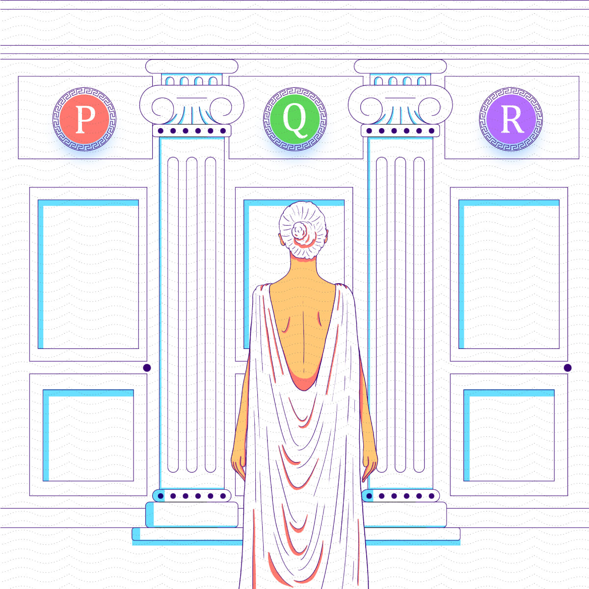
P
La introducción a la lógica proposicional y cuantificacional nos proporciona las bases para comprender el razonamiento lógico y la estructura de los argumentos. Hemos explorado los diferentes elementos y operadores que conforman esta lógica, permitiéndonos analizar y evaluar la validez de los argumentos. Además, hemos aprendido a construir tablas de verdad, desarrollando así nuestras habilidades para argumentar de manera rigurosa.
Q
La sintaxis y semántica de la lógica proposicional son fundamentales para entender cómo se construyen y se interpretan las expresiones lógicas. Mediante el análisis de la estructura y los conectivos lógicos, hemos aprendido a identificar las propiedades de las fórmulas y a evaluar su verdad o falsedad en diferentes interpretaciones.
R
Las reglas de inferencia y demostraciones en lógica proposicional y cuantificacional nos brindan las herramientas necesarias para demostrar la validez de los argumentos y derivar nuevas conclusiones a partir de premisas dadas.
¿Qué es la lógica? La lógica es una rama de la filosofía, matemáticas e informática que estudia los principios y métodos que se utilizan para distinguir el razonamiento correcto del incorrecto. Es una herramienta que nos permite inferir conclusiones válidas a partir de premisas dadas.
Lógica proposicional (o lógica de enunciados)
Estudia las proposiciones que son declaraciones que pueden ser verdaderas o falsas, pero no ambas simultáneamente. En esta lógica, las proposiciones se combinan mediante operadores lógicos como "y" (conjunción), "o" (disyunción), "no" (negación), entre otros.
Lógica cuantificacional (o lógica de predicados)
Va un paso más allá de la lógica proposicional al considerar proposiciones que tienen variables y cuantificadores como "para todo" (∀) y "existe" (∃). Estas proposiciones hacen afirmaciones sobre objetos en un dominio específico.
Resumen
Prueba tu conocimiento
Este cuestionario consta de 6 preguntas relacionadas con la lógica proposicional y cuantificacional. Haz clic sobre la respuesta que consideres correcta, verifica y avanza haciendo clic en las flechas.
¿Qué es la lógica proposicional?
- Es el estudio de la estructura del lenguaje natural.
- Es el estudio de los argumentos válidos e inválidos.
- Es el estudio de las proposiciones y las conectivas lógicas.
¿Qué es la lógica cuantificacional?
- Es el estudio de la estructura del lenguaje natural.
- Es el estudio de los argumentos válidos e inválidos.
- Es el estudio de los cuantificadores y las proposiciones cuantificadas.
¿Qué rama de la filosofía, matemáticas e informática se encarga de estudiar los principios y métodos para distinguir el razonamiento correcto del incorrecto?
- Geometría
- Lógica
- Semántica
En la lógica proposicional, ¿cuál es una afirmación que puede ser verdadera o falsa?
- Proposición
- Cuantificador
- Predicado
En la lógica cuantificacional, ¿qué cuantificador se lee como "para todo" o "para cualquier"?
- Disyunción
- Universal
- Existencial
Dentro de la lógica proposicional, si P representa "Llueve" y Q representa "Llevaré un paraguas", ¿cuál de las siguientes proposiciones compuestas significa "Si llueve, entonces llevaré un paraguas"?
- P∧Q
- P→Q
- P⇔Q